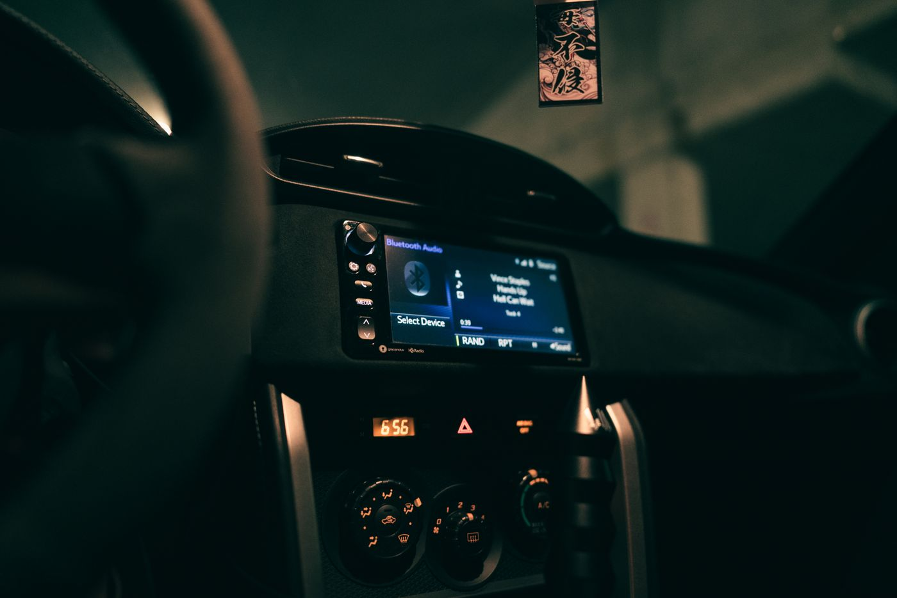
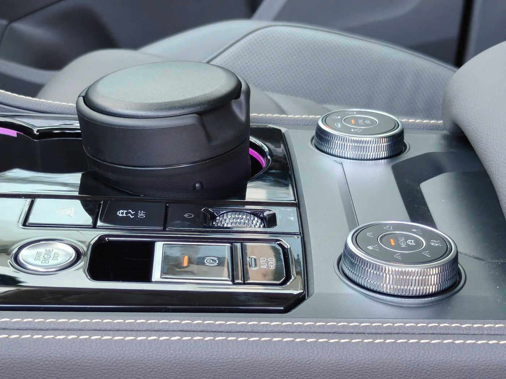

Bentley Will Sell You a Better Screen. It Costs Almost Every Button.
Bentley has announced an infotainment retrofit for second-generation Continental GT and Flying Spur models that replaces the original touchscreen with a larger, faster unit. The upgrade deletes most of the physical climate controls below the screen to fit it. Bentley announced the programme in the w
Bentley will retrofit a faster, larger screen into second-generation Continental GT and Flying Spur — and the upgrade deletes most of the physical climate controls below it. The programme was announced the week of 13 November 2026.
It is the reverse of the usual retrofit: instead of adding tech to an older car, Bentley is removing hard buttons from cars that already have them — while Audi, in the same week, said it is going back to switchgear.
Bentley has announced an infotainment retrofit for second-generation Continental GT and Flying Spur models that replaces the original touchscreen with a larger, faster unit. The upgrade deletes most of the physical climate controls below the screen to fit it.
Bentley announced the programme in the week of November 13, 2026, for an undisclosed price.
What you get
The new head unit is a 9.7-inch touchscreen at 2K (1440p) resolution, with Bentley claiming “impressively fast processor speeds” and “the latest navigation mapping.” Critically for cars of this age, it supports both wired and wireless phone projection — meaning Apple CarPlay, which Bentley did not fit to these cars at the factory.
That is the real argument for the retrofit. A second-generation Continental GT or Flying Spur predates CarPlay in a Bentley, and adding it to an otherwise well-built interior is a legitimate want, not vanity.

What it costs you in hardware
The original dash put a small screen above a bank of switches, dials and a dedicated climate readout. Fitting a 9.7-inch display means those go.
Most climate functions move into the touchscreen. The CD player is removed. Some controls survive: A/C, front and rear defrost, the navigation shortcut, and what appears to be a voice-control trigger remain as physical inputs. Seat heating and ventilation also stay, but only because their controls were already located south of the shifter rather than below the screen.
Exactly two knobs carry over.
So the trade is precise and worth stating plainly: you gain CarPlay, a modern screen and current navigation. You lose the ability to change cabin temperature without looking at a screen.

Why this is a genuinely strange product
The retrofit arrives at a moment when the industry is moving the other way. It is the same week Audi’s US product chief told The Drive that Audi had gone as far as it would on touchscreens and was heading back toward mechanical controls.
Bentley is therefore selling, as an upgrade, exactly the design decision that other manufacturers are now backing away from. That does not make it wrong for a Bentley owner — these are ten-year-old cars, and factory support for a decade-old infotainment system is rare and worth something. But an owner should go in knowing they are buying a 2018 answer in 2026.
An OEM retrofit is a different product from an aftermarket one
It is worth being clear about what is actually being sold here, because the aftermarket already solved “old Bentley, no CarPlay” years ago.
An aftermarket head unit is cheaper and often more feature-dense. What it does not have is the things a factory programme brings: integration with the car’s own menu structure, steering wheel and cluster inputs wired to work the way the car was designed, and a part that a dealer will stand behind. On a car where the climate panel, the seat controls and the infotainment are all one system, ripping out the factory screen and dropping in a third-party unit frequently costs function elsewhere — and leaves the car’s interior looking modified rather than optioned.
That is the real case for paying Bentley rather than an installer. It is the same reason a factory tow package outsells a better aftermarket hitch.
The two-knob question
Of everything in the announcement, “exactly two knobs carry over” is the detail that should drive the decision, and it is under-specified in the material released.
Two knobs out of a full bank is a large reduction. Which two survive determines how usable the car is on the move — a volume knob is nearly essential, and if the second is something like a drive-mode selector rather than cabin temperature, then every temperature change after the retrofit requires a glance away from the road.
Ask to sit in a converted car before committing. Dealers arranging retrofits often have a completed example, and five minutes in one answers this better than any specification sheet.
What the retrofit does not change
Nothing in the announcement suggests the upgrade touches the car’s cameras, driver assistance systems, or audio amplification. It is a head unit and a trim panel. If the reason you are considering it is that the reversing camera looks dated, this is not the fix.
The question to ask before booking
The price is not published, and that matters more than usual here. This is a dealer-installed retrofit on a low-volume luxury car. Historically, retrofit programmes of this kind price in the thousands, but we have no figure and will not guess at one.
Ask the dealer three things before committing: the total installed cost, which two knobs survive, and whether the original climate panel can be retained or is discarded permanently — because if it is discarded, the retrofit is difficult to reverse, and the car’s original specification is gone.
What we could not verify
The price, in any form. Bentley has not disclosed it and no dealer pricing has been published.
We also could not verify: - Which specific model years within the second generation are eligible - Whether the retrofit is available in every market or US-only - Whether the removed climate panel is retained, or whether the conversion can be reversed - Any independent measurement of the new unit’s performance beyond Bentley’s own claims
The feature list and the list of surviving controls come from Bentley’s announcement as reported by The Drive. The visual comparison of old and new systems is Bentley’s own material.
Source: The Drive, “Would You Upgrade Your Old Car’s Infotainment If It Cost You Almost Every Button?”, updated November 13, 2026, reporting Bentley’s announcement.
CarModReview may earn a commission from purchases made through links on this page, at no extra cost to you.
Topics
- Electrical